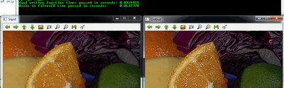

Mask operations on matrices
Prev Tutorial: How to scan images, lookup tables and time measurement with OpenCV
Next Tutorial: Operations with images
Mask operations on matrices are quite simple. The idea is that we recalculate each pixels value in an image according to a mask matrix (also known as kernel). This mask holds values that will adjust how much influence neighboring pixels (and the current pixel) have on the new pixel value. From a mathematical point of view we make a weighted average, with our specified values.
Our test case
Let us consider the issue of an image contrast enhancement method. Basically we want to apply for every pixel of the image the following formula:
The first notation is by using a formula, while the second is a compacted version of the first by using a mask. You use the mask by putting the center of the mask matrix (in the upper case noted by the zero-zero index) on the pixel you want to calculate and sum up the pixel values multiplied with the overlapped matrix values. It’s the same thing, however in case of large matrices the latter notation is a lot easier to look over.
Now let us see how we can make this happen by using the basic pixel access method or by using the cv::filter2D function.
Now let us see how we can make this happen by using the basic pixel access method or by using the Imgproc.filter2D() function.
Now let us see how we can make this happen by using the basic pixel access method or by using the cv2.filter2D() function.
The Basic Method
Here’s a function that will do this:
void Sharpen(const Mat& myImage,Mat& Result) { CV_Assert(myImage.depth() == CV_8U); // accept only uchar images const int nChannels = myImage.channels(); Result.create(myImage.size(),myImage.type()); for(int j = 1 ; j < myImage.rows-1; ++j) { const uchar* previous = myImage.ptr<uchar>(j - 1); const uchar* current = myImage.ptr<uchar>(j ); const uchar* next = myImage.ptr<uchar>(j + 1); uchar* output = Result.ptr<uchar>(j); for(int i= nChannels;i < nChannels*(myImage.cols-1); ++i) { *output++ = saturate_cast<uchar>(5*current[i] -current[i-nChannels] - current[i+nChannels] - previous[i] - next[i]); } } Result.row(0).setTo(Scalar(0)); Result.row(Result.rows-1).setTo(Scalar(0)); Result.col(0).setTo(Scalar(0)); Result.col(Result.cols-1).setTo(Scalar(0)); }
At first we make sure that the input images data is in unsigned char format. For this we use the cv::CV_Assert function that throws an error when the expression inside it is false.
CV_Assert(myImage.depth() == CV_8U); // accept only uchar images
public static double saturateCastUchar(double x) { return x > 255.0 ? 255.0 : (x < 0.0 ? 0.0 : x); } public Mat sharpen(Mat myImage, Mat Result) { myImage.convertTo(myImage, CvType.CV_8U); int nChannels = myImage.channels(); Result.create(myImage.size(),myImage.type()); for(int j = 1 ; j < myImage.rows()-1; ++j) { for(int i = 1 ; i < myImage.cols()-1; ++i) { double sum[] = new double[nChannels]; for(int k = 0; k < nChannels; ++k) { double top = -myImage.get(j - 1, i)[k]; double bottom = -myImage.get(j + 1, i)[k]; double center = (5 * myImage.get(j, i)[k]); double left = -myImage.get(j , i - 1)[k]; double right = -myImage.get(j , i + 1)[k]; sum[k] = saturateCastUchar(top + bottom + center + left + right); } Result.put(j, i, sum); } } Result.row(0).setTo(new Scalar(0)); Result.row(Result.rows()-1).setTo(new Scalar(0)); Result.col(0).setTo(new Scalar(0)); Result.col(Result.cols()-1).setTo(new Scalar(0)); return Result; }
At first we make sure that the input images data in unsigned 8 bit format.
myImage.convertTo(myImage, CvType.CV_8U);
def sharpen(my_image): my_image = cv2.cvtColor(my_image, cv2.CV_8U) height, width, n_channels = my_image.shape result = np.zeros(my_image.shape, my_image.dtype) for j in range (1, height-1): for i in range (1, width-1): for k in range (0, n_channels): sum = 5 * my_image[j, i, k] - my_image[j + 1, i, k] - my_image[j - 1, i, k]\ - my_image[j, i + 1, k] - my_image[j, i - 1, k]; if sum > 255: sum = 255 if sum < 0: sum = 0 result[j, i, k] = sum return result
At first we make sure that the input images data in unsigned 8 bit format.
my_image = cv2.cvtColor(my_image, cv2.CV_8U)
We create an output image with the same size and the same type as our input. As you can see in the storing section, depending on the number of channels we may have one or more subcolumns.
We will iterate through them via pointers so the total number of elements depends on this number.
const int nChannels = myImage.channels(); Result.create(myImage.size(),myImage.type());
int nChannels = myImage.channels(); Result.create(myImage.size(),myImage.type());
height, width, n_channels = my_image.shape result = np.zeros(my_image.shape, my_image.dtype)
We’ll use the plain C [] operator to access pixels. Because we need to access multiple rows at the same time we’ll acquire the pointers for each of them (a previous, a current and a next line). We need another pointer to where we’re going to save the calculation. Then simply access the right items with the [] operator. For moving the output pointer ahead we simply increase this (with one byte) after each operation:
for(int j = 1 ; j < myImage.rows-1; ++j) { const uchar* previous = myImage.ptr<uchar>(j - 1); const uchar* current = myImage.ptr<uchar>(j ); const uchar* next = myImage.ptr<uchar>(j + 1); uchar* output = Result.ptr<uchar>(j); for(int i= nChannels;i < nChannels*(myImage.cols-1); ++i) { *output++ = saturate_cast<uchar>(5*current[i] -current[i-nChannels] - current[i+nChannels] - previous[i] - next[i]); } }
On the borders of the image the upper notation results inexistent pixel locations (like minus one - minus one). In these points our formula is undefined. A simple solution is to not apply the kernel in these points and, for example, set the pixels on the borders to zeros:
Result.row(0).setTo(Scalar(0)); Result.row(Result.rows-1).setTo(Scalar(0)); Result.col(0).setTo(Scalar(0)); Result.col(Result.cols-1).setTo(Scalar(0));
We need to access multiple rows and columns which can be done by adding or subtracting 1 to the current center (i,j). Then we apply the sum and put the new value in the Result matrix.
for(int j = 1 ; j < myImage.rows()-1; ++j) { for(int i = 1 ; i < myImage.cols()-1; ++i) { double sum[] = new double[nChannels]; for(int k = 0; k < nChannels; ++k) { double top = -myImage.get(j - 1, i)[k]; double bottom = -myImage.get(j + 1, i)[k]; double center = (5 * myImage.get(j, i)[k]); double left = -myImage.get(j , i - 1)[k]; double right = -myImage.get(j , i + 1)[k]; sum[k] = saturateCastUchar(top + bottom + center + left + right); } Result.put(j, i, sum); } }
On the borders of the image the upper notation results in inexistent pixel locations (like (-1,-1)). In these points our formula is undefined. A simple solution is to not apply the kernel in these points and, for example, set the pixels on the borders to zeros:
Result.row(0).setTo(new Scalar(0)); Result.row(Result.rows()-1).setTo(new Scalar(0)); Result.col(0).setTo(new Scalar(0)); Result.col(Result.cols()-1).setTo(new Scalar(0));
We need to access multiple rows and columns which can be done by adding or subtracting 1 to the current center (i,j). Then we apply the sum and put the new value in the Result matrix.
for j in range (1, height-1): for i in range (1, width-1): for k in range (0, n_channels): sum = 5 * my_image[j, i, k] - my_image[j + 1, i, k] - my_image[j - 1, i, k]\ - my_image[j, i + 1, k] - my_image[j, i - 1, k]; if sum > 255: sum = 255 if sum < 0: sum = 0 result[j, i, k] = sum
The filter2D function
Applying such filters are so common in image processing that in OpenCV there exist a function that will take care of applying the mask (also called a kernel in some places). For this you first need to define an object that holds the mask:
Mat kernel = (Mat_<char>(3,3) << 0, -1, 0, -1, 5, -1, 0, -1, 0);
Then call the cv::filter2D function specifying the input, the output image and the kernel to use:
filter2D( src, dst1, src.depth(), kernel );
The function even has a fifth optional argument to specify the center of the kernel, a sixth for adding an optional value to the filtered pixels before storing them in K and a seventh one for determining what to do in the regions where the operation is undefined (borders).
Mat kern = new Mat( 3, 3, CvType.CV_8S ); int row = 0, col = 0; kern.put(row ,col, 0, -1, 0, -1, 5, -1, 0, -1, 0 );
Then call the Imgproc.filter2D() function specifying the input, the output image and the kernel to use:
Imgproc.filter2D(I, K, I.depth(), kern );
The function even has a fifth optional argument to specify the center of the kernel, a sixth for adding an optional value to the filtered pixels before storing them in K and a seventh one for determining what to do in the regions where the operation is undefined (borders).
kernel = np.array([ [0,-1,0], [-1,5,-1], [0,-1,0] ],np.float32) # kernel should be floating point type
Then call the cv2.filter2D() function specifying the input, the output image and the kernell to use:
K = cv2.filter2D(I, -1, kernel) # ddepth = -1, means destination image has depth same as input image.
This function is shorter, less verbose and, because there are some optimizations, it is usually faster than the hand-coded method. For example in my test while the second one took only 13 milliseconds the first took around 31 milliseconds. Quite some difference.
For example:
You can download this source code from here or look in the OpenCV source code libraries sample directory at samples/cpp/tutorial_code/core/mat_mask_operations/mat_mask_operations.cpp.
Check out an instance of running the program on our YouTube channel.
You can look in the OpenCV source code libraries sample directory at samples/java/tutorial_code/core/mat_mask_operations/MatMaskOperations.java.
You can look in the OpenCV source code libraries sample directory at samples/python/tutorial_code/core/mat_mask_operations/mat_mask_operations.py.